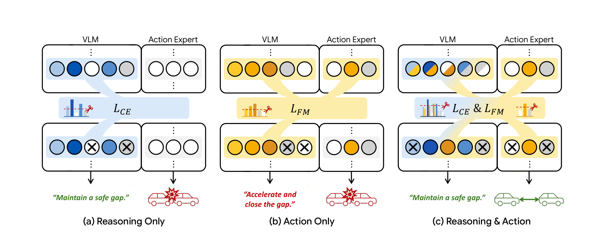
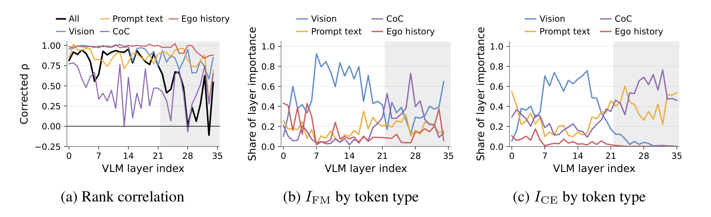
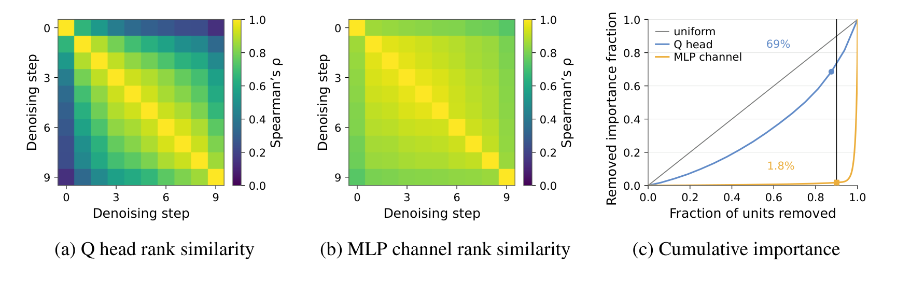

MoOP
Pruning Autonomous Driving VLAs: What to Preserve for Reasoning and Action

MoOP prunes Alpamayo 1.5 by keeping what reasoning or action needs. It needs no fine-tuning after pruning.
94.0% of dense LingoQA kept
with expert MLP pruning
speedup
GPU memory
Two objectives, one network
Reasoning vision–language–action (VLA) models for autonomous driving use chain-of-thought reasoning to guide action generation, but incur substantial memory and computational costs. We study structured pruning for these models, focusing on preserving both scene understanding and trajectory prediction.
Our analysis of Taylor importance in Alpamayo-1.5-10B shows that reasoning and trajectory objectives assign different importance to the same VLM structures. In the action expert, MLP channels exhibit more stable importance rankings across denoising steps than query heads, and a small fraction of channels accounts for most of the measured importance.
Based on these findings, we propose MoOP (Mixture-of-Objective Pruning). It does two things:
- For the VLM, it combines the importance ranks from both objectives.
- For the action expert, it aggregates stepwise importance and keeps a fixed subset of MLP channels.
At 24.0% total parameter reduction, VLM-only pruning with MoOP retains 94.0% of the dense model's LingoQA score and achieves the highest closed-loop scene score among methods at the same budget.
Removing 93.75% of expert MLP channels increases the reduction to 39.4%. Open-loop errors stay nearly unchanged relative to VLM-only pruning, and closed-loop performance remains competitive. The resulting model runs end to end 1.37× faster with 36.6% lower peak memory, without post-pruning fine-tuning.
What reasoning and action each depend on
We measure the Taylor importance of every query head and MLP channel in Alpamayo 1.5 under two objectives:
- Cross-entropy on the model's own Chain-of-Causation reasoning (CE).
- The action expert's flow-matching loss (FM), which reaches the VLM only through the KV cache.
The objectives disagree
CE and FM rank the same VLM units differently. The disagreement grows in the late layers, where the CE importance concentrates on the CoC tokens.
Expert MLPs are step-stable
The expert reuses its weights at every denoising step. Its MLP channels keep their importance ranking across steps; its query heads do not.
A few channels carry it
Removing 90% of the expert's MLP channels removes only 1.8% of their measured importance. The same 90% of query heads would remove 69%.


Mixture-of-Objective Pruning
Importance is measured once on 100 calibration clips. Units are then removed physically, without fine-tuning.
Measure both objectives
One teacher-forced pass over the model's own CoC gives |∂LCE/∂g| for every query head and MLP channel. The flow-matching loss is backpropagated through the expert into the KV cache, and from there through the VLM, giving |∂LFM/∂g|.
Combine ranks in the VLM
Within each layer, a unit's score is max(rankCE, rankFM): it is kept if either objective ranks it high. Every layer drops the same share of its lowest-scoring units: 13 of 32 query heads and 40% of the MLP channels. That removes 24.0% of all parameters.
Aggregate steps in the expert
Per-step FM importance is normalised within each layer and averaged over the denoising steps. The expert keeps 516 of 8,256 MLP channels in every layer and all of its attention heads, for 39.4% total reduction.
Results at the same parameter budget
All methods prune Alpamayo-1.5-10B to the same budget (24% of parameters, VLM only) without fine-tuning. MoOP is the method in the shaded rows.
Open loop: PhysicalAI-AV
| Test500 | OOD-Val262 | |||||
|---|---|---|---|---|---|---|
| Method | Expert pruning | Params removed | minADE@6 ↓ | minFDE@6 ↓ | minADE@6 ↓ | minFDE@6 ↓ |
| Dense (Alpamayo 1.5) | – | 0% | 0.842 | 2.267 | 1.000 | 2.496 |
| Wanda | ✗ | 24% | 2.975 | 8.269 | 2.790 | 6.884 |
| LLM-Pruner | ✗ | 24% | 1.451 | 3.889 | 1.662 | 4.153 |
| Týr-the-Pruner | ✗ | 24% | 0.950 | 2.570 | 1.176 | 2.990 |
| FM-only | ✗ | 24% | 1.008 | 2.720 | 1.178 | 2.960 |
| CE-only | ✗ | 24% | 1.584 | 4.500 | 1.546 | 4.010 |
| MoOP | ✗ | 24% | 0.950 | 2.546 | 1.119 | 2.851 |
| MoOP | ✓ | 39.4% | 0.951 | 2.539 | 1.118 | 2.844 |
Metrics in metres, over 8 sampled trajectories per clip (the first 6 are used). Best pruned result in bold.
Closed loop: AlpaSim
| Origin150 | Hard100 | ||||||
|---|---|---|---|---|---|---|---|
| Method | Expert pruning | Scene score ↑ | Off-road ↓ | At-fault coll. ↓ | Scene score ↑ | Off-road ↓ | At-fault coll. ↓ |
| Dense (Alpamayo 1.5) | – | 0.750 | 0.070 | 0.040 | 0.510 | 0.265 | 0.030 |
| Wanda | ✗ | 0.621 | 0.093 | 0.147 | 0.406 | 0.140 | 0.060 |
| LLM-Pruner | ✗ | 0.811 | 0.037 | 0.057 | 0.575 | 0.160 | 0.035 |
| Týr-the-Pruner | ✗ | 0.786 | 0.087 | 0.030 | 0.586 | 0.215 | 0.020 |
| FM-only | ✗ | 0.783 | 0.087 | 0.033 | 0.546 | 0.260 | 0.025 |
| CE-only | ✗ | 0.660 | 0.090 | 0.073 | 0.416 | 0.200 | 0.040 |
| MoOP | ✗ | 0.828 | 0.067 | 0.023 | 0.595 | 0.190 | 0.040 |
| MoOP | ✓ | 0.793 | 0.083 | 0.030 | 0.600 | 0.200 | 0.020 |
Each scene is driven twice; rates are per rollout. The scene score is 0 after an at-fault collision or off-road event, otherwise progress along the route. Origin150 is the first 150 scenes of the AlpaSim public suite; Hard100 is a disjoint set of 100 harder scenes.
Driving VQA: LingoQA
| Method | LingoQA ↑ | CoC NLL ↓ |
|---|---|---|
| Dense (Alpamayo 1.5) | 73.2 | 0.175 |
| Wanda | 9.2 | 2.183 |
| LLM-Pruner | 44.8 | 0.462 |
| Týr-the-Pruner | 34.2 | 0.516 |
| FM-only | 37.0 | 0.586 |
| CE-only | 30.2 | 0.313 |
| MoOP | 68.8 | 0.252 |
LingoQA: zero-shot accuracy judged by Lingo-Judge. CoC NLL: per-token NLL of the dense model's Test500 reasoning under each pruned model.
Latency and memory
| Model | Expert MLP removed | End-to-end (ms) | Params (B) | Peak (GiB) |
|---|---|---|---|---|
| Dense | – | 1341.8 | 11.08 | 22.49 |
| MoOP | 0% | 1032.4 (1.30×) | 8.42 | 17.45 |
| MoOP | 75% | 987.0 (1.36×) | 7.05 | 14.90 |
| MoOP | 93.75% | 977.8 (1.37×) | 6.71 | 14.26 |
One inference: prefill, CoC decoding and 10 denoising steps, on one GPU.
Where the time goes
End-to-end latency of one inference, split into the VLM prefill, CoC decoding (16 tokens) and the expert's 10 denoising steps. VLM pruning shortens prefill and decoding; expert MLP pruning shortens denoising.
What the pruned models answer
Driving questions from the LingoQA validation set, answered zero-shot at the 24.0% budget and judged by Lingo-Judge. These are selected examples, not a random sample: on each, the dense model and MoOP answer correctly while FM-only, CE-only and Týr-the-Pruner do not. Over all 500 questions, accuracy is .
Same scene, different pruning
MoOP, FM-only and CE-only pruned to the same budget, on the same AlpaSim scene: six scenes where both single-objective models cause an at-fault collision and five where both leave the road, while MoOP drives through. Ten scenes are at the 30.0% budget (u50) and one at 24.0% (u40). Each column is that method's worse rollout of two. On top are the four cameras the model drives from (front wide and front tele, cross left and cross right), re-rendered by AlpaSim's neural renderer from the recorded rollout; the driver is not re-run, so this is the drive that was scored. Below them is a bird's-eye view that turns with the car. Under each column is the reasoning the model was acting on at that frame.
Prune Alpamayo 1.5 in three commands
The repository ships the importance scores the paper's models were cut from, so the pruned model can be rebuilt from the base weights without a GPU pass; no pruned checkpoint is needed. It also includes the code to re-measure importance and the open-loop, LingoQA and AlpaSim evaluation, plus every sample list.
git clone https://github.com/cvlab-kaist/MoOP && cd MoOP && uv sync
python scripts/build_slim.py --recipe moop_u40 \
--importance recipes/importance/importance.npz --out runs/moop_u40
python scripts/verify_recipe.py runs/moop_u40/slim_meta.json # MATCH = the paper's model
from moop.slim import load_slim
model = load_slim("runs/moop_u40") # Alpamayo 1.5 at the pinned revision, 24% of parameters removed
Requires access to the gated nvidia/Alpamayo-1.5-10B weights.
See the README for the recipes (MoOP, MoOP + expert, 30%
budget) and the evaluation protocols.
BibTeX
@article{kim2026moop,
title = {Pruning Autonomous Driving {VLAs}: What to Preserve for Reasoning and Action},
author = {Kim, Seongchan and Son, Soowon and Kim, Sangoh and Ko, Hyunah and
Hong, Eunbeen and Lee, Hyunkoo and Lee, Sanghyun and Moon, WonJun and
Kim, Kihong and Son, Dongyeon and Nam, Woongchan and Kim, Seungryong},
year = {2026}
}